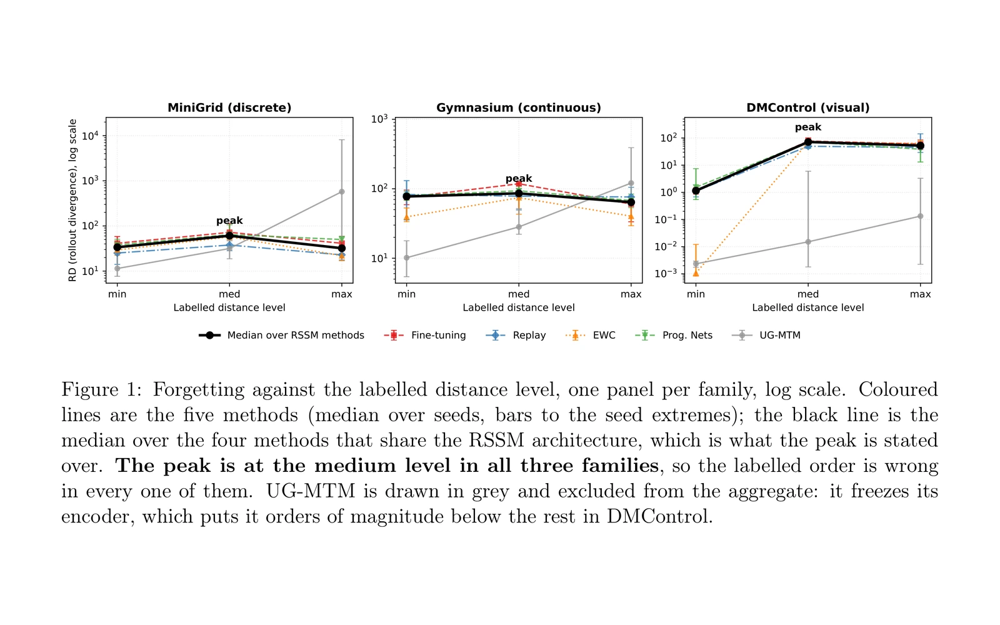

WMF Benchmark
A world model learns to predict how an environment behaves. Train one on a second task and it loses the first: the same catastrophic forgetting that plagues supervised continual learning, but harder to see, because the damage lives inside a latent transition model rather than in a visible accuracy number. Existing continual-learning benchmarks measure the policy or the system end to end. None of them isolate the component that actually forgets.
So I built one. The benchmark holds everything else fixed and measures forgetting specifically in the transition model M: three environment families (MiniGrid, Gymnasium/MuJoCo, dm_control) × three task distances × five methods, ten seeds in every cell that discriminates between them: 375 runs plus 75 from-scratch reference pairs. Baselines are fine-tuning, infinite replay, EWC and Progressive Networks, against my own method, UG-MTM (an uncertainty-gated mixture of transition models).
I wrote a first paper in July 2026 with five findings, one of them at p < 0.001. Then I went looking for bugs and found twenty-one. The worst was a collapsed VAE posterior: zero of thirty-two latent dimensions were active, meaning the transition model had never actually seen the environment. That single bug invalidated all 225 runs. Others followed: evaluation on noise, a badly defined NLL, a KL term inflating a metric roughly twelve-fold, unseeded environments that made nothing reproducible, an EWC Fisher matrix that was almost inert, and a dm_control distance setting that compared a task against itself.
None of the five original findings survived the corrected pipeline. The one that looked most solid reversed sign. I threw the paper away and started again, which is the entire reason I now think the benchmark, not my method, is the contribution worth publishing. Once the pipeline is correct, UG-MTM does not forget because it does not learn: it freezes its encoder, so it preserves the first task bit for bit and pays for it with the worst forward transfer in the grid by two orders of magnitude.
The rebuilt benchmark produced two results, both negative and neither about which method wins. First, the distance axis I designed the whole thing around does not order forgetting: it peaks at the medium level in all three families, and across the nine cells the label carries no rank information at all. The cleanest case needs no cross-family comparison: one family's maximum level is its medium perturbation plus two more, on the same task pair, and it forgets less, because a cheetah at triple mass barely moves and a task that generates little variety has little to teach. Second, the forgetting happens almost entirely in the encoder, where component-level metrics, including mine, are blind by construction. Fine-tuning's reconstruction of the first task degrades by a factor of 811 while its prediction fidelity reports an improvement, and EWC makes that exact: its Fisher information is identically zero on every encoder parameter, so it protects the transition model almost perfectly and nothing else.
What holds up: 434 tests, same-seed reruns that reproduce every metric bit for bit, a declared scope for every metric, every table generated from the stored results rather than transcribed, and a runner that refuses to combine results produced under different protocols. The eight-page version went out in August and is under review at CL4FMAgents @ NeurIPS 2026 (non-archival workshop); all 375 result files are public.
- Stack
- PyTorch, MiniGrid, Gymnasium/MuJoCo, dm_control
- Status
- Under review at CL4FMAgents @ NeurIPS 2026 (non-archival workshop)
- Year
- 2026
- Code
- WorldModelsBenchmark

Next: Perseo